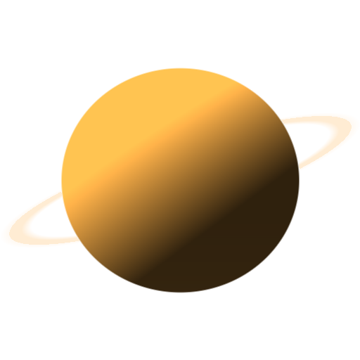

Welcome aboard
Fly from the Milky Way to every planet
An interactive 3D model of the Solar System that runs right in your browser. Free, no sign-up, no ads. Guided tours with a voice, quizzes, a time machine and the night sky are waiting for you.

How to use it
Everything works with the mouse and keyboard. Here is where to find each part.
Fly through space
Drag with the mouse to turn the view. Use the wheel, or two fingers on the trackpad, to zoom. Click a planet to fly to it. Zoom far out to reach the Milky Way.
The menu
The three-line button in the top-left corner opens the menu with five tabs: Speed, Time, Galaxy, Planets and Compare.
Time machine
Menu → Time tab → “Turn on the time machine”. Pick any date and the planets stand where they really were that day. Try famous dates, such as Gagarin’s flight in 1961 or the Moon landing in 1969, or the space calendar with eclipses and full moons.
Tours and quizzes
Top bar → tour button. Choose a short tour (about 10 minutes) or a long one (40–50 minutes) where Valli tells the story out loud. The same window has a quiz with six levels, “Guess the planet” and a question of the day.
Night sky
Top bar → night sky button. See the sky from Earth or from other worlds, constellations with their myths, nebulae and meteor showers, and play “Find it in the sky”.
Speed and pause
Menu → Speed tab: a slider from full stop to maximum. The pause button in the top bar freezes everything at once.
Settings and language
The gear button holds brightness, quality, orbit lines, sound, the voice and the language. You can switch the language there at any time.
Snapshots and clean view
Settings → “Take a snapshot” saves a picture. The eye button in the top bar hides every button and leaves only space.
Keyboard
Arrow keys rotate the camera, + and − zoom, F switches to full screen, Esc closes menus and windows.
Questions and answers
Is it really free?
Yes. No sign-up, no ads, no payments.
Does the site collect my data?
No accounts, no cookies, no tracking. Your settings stay in your own browser. To show the page, the 3D library and fonts are loaded from public servers (Cloudflare and Google) which, like any server, can see your IP address.
What do I need to run it?
A computer with a modern browser (Chrome, Safari, Firefox or Edge) and hardware acceleration turned on. Phones and tablets work too, but the site is built for computers.
Why does the voice sound different on my computer?
Voices come from your own system, so they depend on what is installed. The interface speaks twenty languages; the long tour stories are in English and Russian for now.
I found a mistake. What now?
Please tell us on GitHub (link below). Fixes to facts and translations are very welcome.